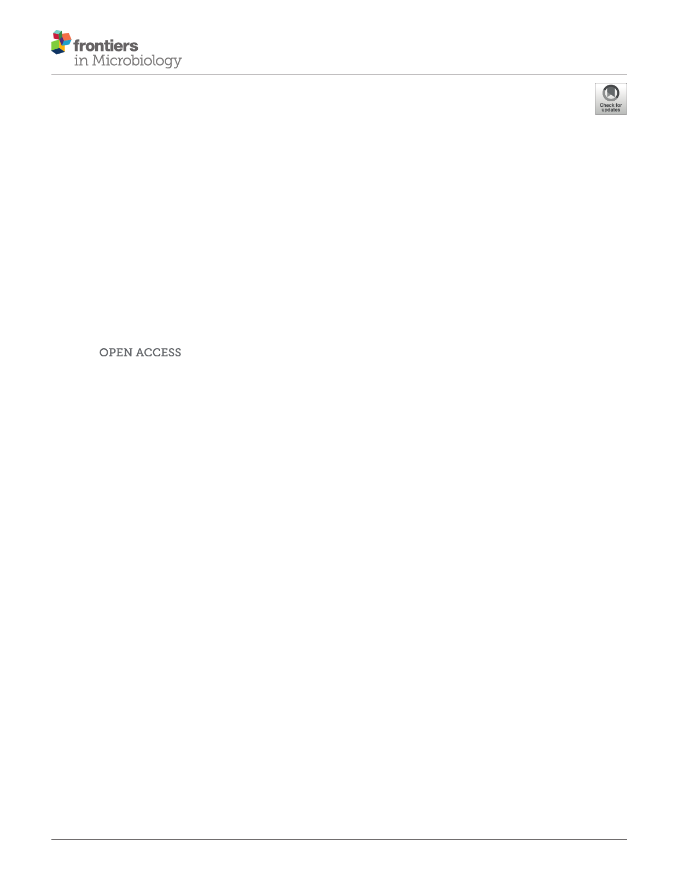

Xiangkuo Zheng1†, Lijiang Chen1†, Weiliang Zeng2, Wenli Liao1, Zhongyong Wang1,
Xuebin Tian2, Renchi Fang1, Yao Sun1 and Tieli Zhou1*
1 Department of Clinical Laboratory, The First Affiliated Hospital of Wenzhou Medical University, Wenzhou, China, 2 School
of Laboratory Medicine and Life Sciences, Wenzhou Medical University, Wenzhou, China
Edited by:
Palanivel Velmurugan,
Alagappa University, India
Reviewed by:
Sathiamoorthi Thangavelu,
Alagappa University, India
Rajakumar S.,
Bharathidasan University, India
Latha Ragunathan,
Aarupadai Veedu Medical College &
Hospital, India
*Correspondence:
Tieli Zhou
wyztli@163.com
†These authors have contributed
equally to this work and share first
authorship
Specialty section:
This article was submitted to
Antimicrobials, Resistance
and Chemotherapy,
a section of the journal
Frontiers in Microbiology
Received: 26 February 2021
Accepted: 07 May 2021
Published: 04 June 2021
Citation:
Zheng X, Chen L, Zeng W,
Liao W, Wang Z, Tian X, Fang R,
Sun Y and Zhou T (2021) Antibacterial
and Anti-biofilm Efficacy of Chinese
Dragon’s Blood Against
Staphylococcus aureus Isolated From
Infected Wounds.
Front. Microbiol. 12:672943.
Chinese dragon’s blood (CDB), a characteristic red resin, is an important traditional
Chinese medicine (TCM), and empiric therapy of infected wounds with CDB is
performed in clinical settings. For the first time, we herein report the antibacterial and
anti-biofilm efficacy of CDB against Staphylococcus aureus (S. aureus). Antimicrobial
susceptibility testing, growth curve assay, time-kill curve assay, crystal violet biofilm
assay, scanning electron microscope (SEM) analysis, cell membrane tests, and
quantitative real-time polymerase chain reaction (qRT-PCR) were used for this purpose.
The results suggested that the minimum inhibitory concentration (MIC) values of CDB
against S. aureus ranged from 32 to 128 µg/mL. Growth curves and time-kill curves
confirmed that CDB could inhibit the growth of S. aureus. The biofilm formation ability
and the expression levels of saeR, saeS, and hla of S. aureus in the presence and
absence of CDB were statistically significant (P < 0.01). The results of SEM analysis
and cell membrane tests revealed that exposure to CDB had some destructive effects
on S. aureus cells. In conclusion, CDB exhibits positive antibacterial activity against
S. aureus. Moreover, CDB could reduce the biofilm formation and the virulence factors
of S. aureus by downregulating the expression levels of saeR, saeS, and hla genes.
These findings indicated that CDB has immense potential to serve as a viable alternative
for the treatment of infected wounds caused by S. aureus in clinical settings.
Keywords: Chinese dragon’s blood, infected wounds, Staphylococcus aureus, antibacterial activity, anti-biofilm
efficacy
INTRODUCTION
Worldwide, infected wounds are increasingly becoming a threat to human health (Ju et al.,
2018). Acute wounds generally have a self-healing capacity and do not require significant external
intervention; however, self-healing is often not possible in the case of chronic wounds. Therefore,
external treatment is needed (Garcia-Villen et al., 2019). In fact, clinics face enormous challenges in
managing chronic infected wounds. The normal recovery phases are altered significantly because of
the presence of microbial contamination on the wound surface, leading to the possible impairment
of the healing pathway and finally resulting in non-healing wounds (Garcia-Villen et al., 2019).
1